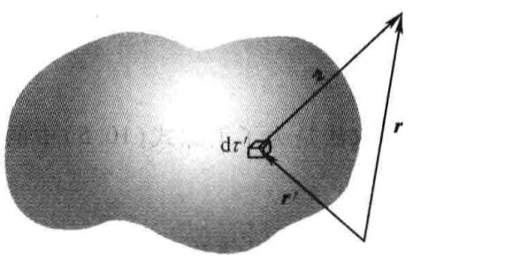

本章探究源（\(\rho\)与\(\boldsymbol{J}\)）如何产生电场与磁场，即寻求Maxwell方程组的普遍解.
亦即：给定\(\rho(\boldsymbol{r}, t)\)或\(\boldsymbol{J}(\boldsymbol{r}, t)\)，如何确定场\(\boldsymbol{E}(\boldsymbol{r}, t)\)与\(\boldsymbol{B}(\boldsymbol{r}, t)\).
对于静态情形，库伦定律与毕奥-萨伐尔定律给出了解.
我们寻求的是依赖时间的这些定律的普遍情形的解.
[令]
因此可以令
$$\boldsymbol{B} = \nabla\times\boldsymbol{A}$$其中\(A\)为任意矢量.
代入法拉第定律：
$$\nabla\times\boldsymbol{E} = -\frac{\partial\boldsymbol{B}}{\partial t}$$得：
$$\nabla\times\boldsymbol{E} = -\frac{\partial}{\partial t}(\nabla\times\boldsymbol{A})$$ $$\nabla\times\left(\boldsymbol{E} + \frac{\partial\boldsymbol{A}}{\partial t}\right) = 0$$ $$\boldsymbol{E} + \frac{\partial\boldsymbol{A}}{\partial t} = -\nabla V$$这里的-号取决于电势的物理意义.
代入：
$$\nabla\cdot\boldsymbol{E} = \frac{1}{\epsilon_0}\rho$$得：
$$\nabla\cdot\left(-\nabla V - \frac{\partial \boldsymbol{A}}{\partial t}\right) = \frac{\rho}{\epsilon_0}$$ $$\nabla^2 V + \frac{\partial}{\partial t}(\nabla\cdot\boldsymbol{A}) = -\frac{\rho}{\epsilon_0}$$它代替了泊松方程，从它可以回到静电学的形式.
?什么是泊松方程
?什么叫回到静电学的形式
上一小节中的公式虽然形式上不太优美，但是我们成功将求解六个问题（\(\boldsymbol{E}\)与\(\boldsymbol{B}\)各自的三个分量）缩减为四个（\(V\)一个分量与\(\boldsymbol{A}\)三个分量）.
式
$$\boldsymbol{B} = \nabla\times \boldsymbol{A}$$ $$\boldsymbol{E} = -\nabla V - \frac{\partial\boldsymbol{A}}{\partial t}$$不能唯一定义势：只要不影响\(\boldsymbol{E}\)与\(\boldsymbol{B}\)，可以自由对\(V\)与\(\boldsymbol{A}\)附加额外条件.
假设有两套势\((V, \boldsymbol{A})\)与\((V', \boldsymbol{A}')\)，它们对应相同的电场与磁场，设：
$$\boldsymbol{A}' = \boldsymbol{A} + \boldsymbol{\alpha}$$ $$V' = V + \beta$$由于\(\boldsymbol{A}\)与\(\boldsymbol{A}'\)需要给出同样的\(\boldsymbol{B}\)，因此其旋度必须相等，即：
$$\nabla\times\boldsymbol{\alpha} = 0$$因此可以将\(\boldsymbol{\alpha}\)写成某个标量的梯度：
$$\boldsymbol{\alpha} = \nabla\lambda$$两个势也要给出同一个\(\boldsymbol{E}\)，因此：
$$\nabla\beta + \frac{\partial\alpha}{\partial t} = 0$$ $$\nabla\left(\beta + \frac{\partial\lambda}{\partial t}\right) = 0$$括号中的项因此不依赖于坐标，但可依赖于时间，称为\(k(t)\)：
$$\beta = -\frac{\partial\lambda}{\partial t} + k(t)$$ $$\boldsymbol{A}' = \boldsymbol{A} + \nabla\lambda$$ $$V' = V - \frac{\partial\lambda}{\partial t}$$[令]
$$\nabla\cdot\boldsymbol{A} = -\mu_0\epsilon_0\frac{\partial V}{\partial t}$$洛伦兹规范的优点在于其对\(V\)与\(\boldsymbol{A}\)的处理是相同的：
d' Alembertian算子同时出现在两个方程中：
$$\square^2 V = -\frac{\rho}{\epsilon_0}$$ $$\square^2 \boldsymbol{A} = -\mu_0\boldsymbol{J}$$静态形式下：
$$\square^2 V = -\frac{\rho}{\epsilon_0} \Rightarrow \nabla^2 V = -\frac{\rho}{\epsilon_0}$$ $$\square^2 \boldsymbol{A} = -\mu_0\boldsymbol{J}\Rightarrow \nabla^2 \boldsymbol{A} = -\mu_0\boldsymbol{J}$$变为四个相同的Possion方程.
\(\boldsymbol{A}\)式算三个方程；
“相同”是只都是\(\nabla^2(势) = -(源)\)的形式相同.

它具有熟知的解：
$$V(\boldsymbol{r}) = \frac{1}{4\pi\epsilon_0}\int\frac{\rho(\boldsymbol{r}')}{r_0}\mathrm{d}\tau$$ $$\boldsymbol{A}(\boldsymbol{r}) = \frac{\mu_0}{4\pi}\int\frac{\boldsymbol{J}(\boldsymbol{r}')}{r_0}\mathrm{d}\tau$$电磁“信息”以光速传播，所以，在非静止情况下，这信息不是源“现在”的状态，而是较早时间\(t_r\)（推迟时间）当“信息”离开源时的.
由于信息必须传播一个距离\(r_0\)，推迟为\(r_0/c\)：
$$t_r \equiv t - \frac{r_0}{c}$$因此，对于非静止源，\(V(\boldsymbol{r})\)与\(\boldsymbol{A}(\boldsymbol{r})\)的一个自然推广为：
$$V(\boldsymbol{r}, t) = \frac{1}{4\pi\epsilon_0}\int\frac{\rho(\boldsymbol{r}', t_r)}{r_0}\mathrm{d}\tau$$ $$\boldsymbol{A}(\boldsymbol{r}, t) = \frac{\mu_0}{4\pi}\int\frac{\boldsymbol{J}(\boldsymbol{r}', t_r)}{r_0}\mathrm{d}\tau$$由于积分在推迟时间内进行，因此称为推迟势.